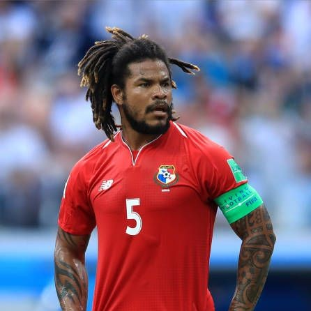
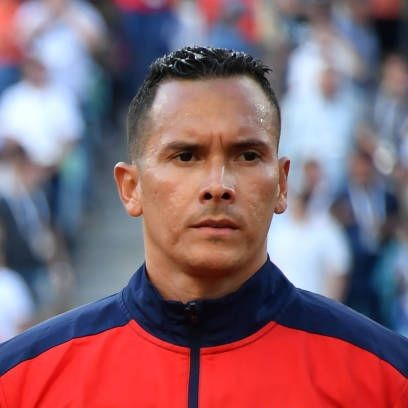
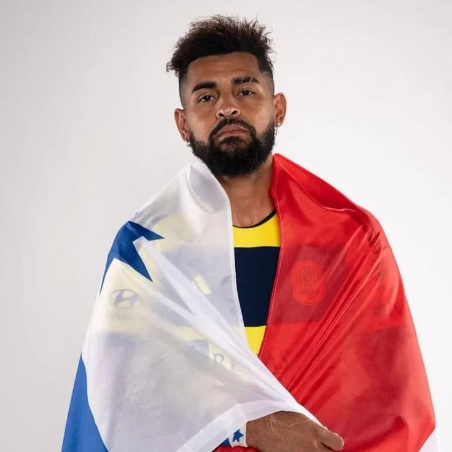
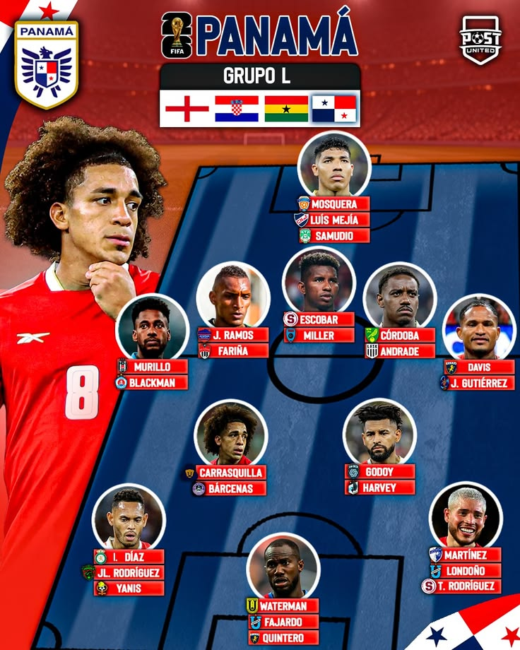
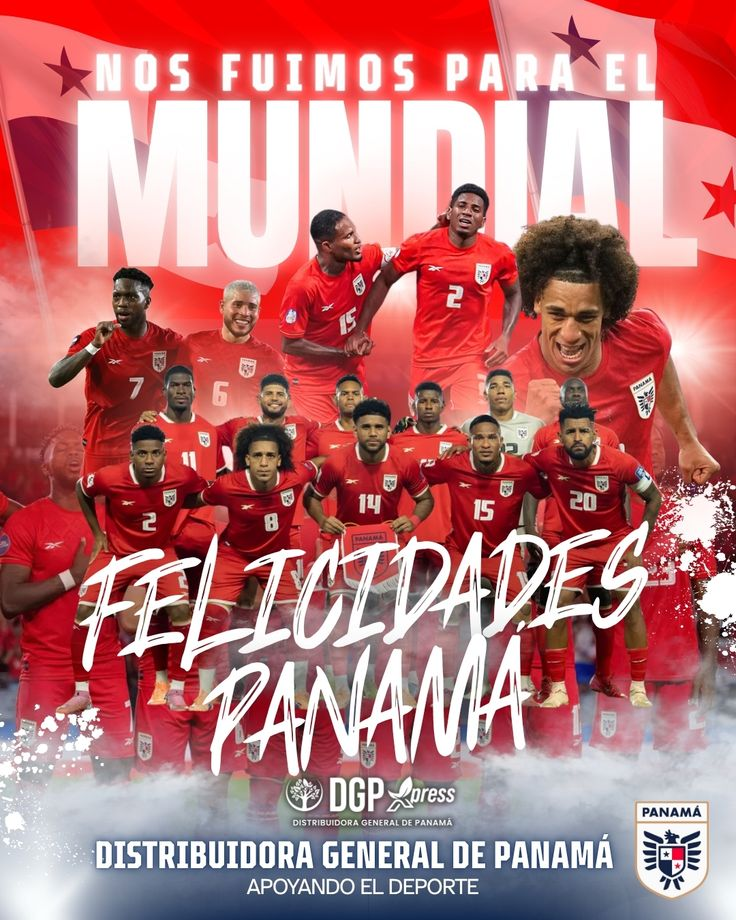
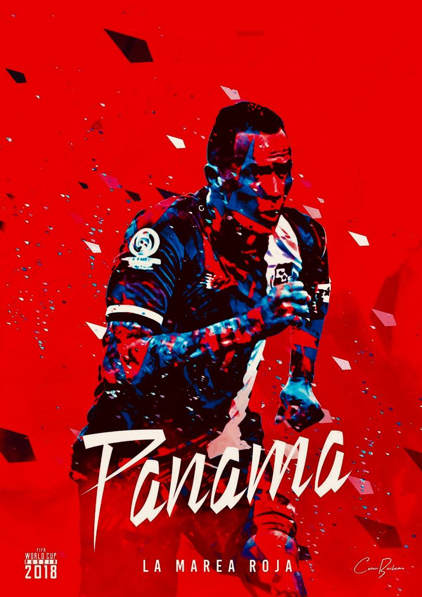
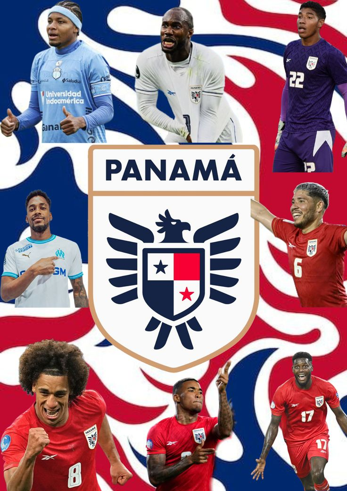

Información General
Nombre oficial: Selección Nacional de Panamá
Apodo: La Marea Roja
Confederación: CONCACAF
Federación: Federación Panameña de Fútbol (FEPAFUT)
Capitán: Aníbal Godoy
Director Técnico: Thomas Christiansen
Primera participación mundialista: 2018
Ranking FIFA: Entre las selecciones más competitivas de Centroamérica.
Historia Mundialista
► Panamá es una de las selecciones con mayor crecimiento en la región de Centroamérica durante las últimas décadas.
► Tras varios intentos de clasificación, logró alcanzar por primera vez una Copa Mundial de la FIFA en Rusia 2018, marcando un momento histórico para el país.
► En ese torneo consiguió anotar sus primeros goles mundialistas y representar con orgullo al fútbol panameño en la máxima competición internacional.
► Desde entonces, Panamá se ha consolidado como una de las selecciones más fuertes de la CONCACAF, compitiendo regularmente en torneos internacionales.
📊 Estadísticas Mundialistas
| Estadística | Dato |
|---|---|
| Participaciones | 1 |
| Títulos Mundiales | 0 |
| Mejor Resultado | Fase de Grupos (2018) |
| Última Participación | 2018 |
| Continente | América del Norte y Centroamérica |
| Confederación | CONCACAF |
⭐ Jugadores Históricos

Román Torres
Autor del gol que clasificó a Panamá a su primer Mundial.

Blas Pérez
Uno de los máximos goleadores en la historia de la selección panameña.

Aníbal Godoy
Capitán y referente del mediocampo de Panamá.
🏆 Participaciones Mundialistas
2018 ⭐
🤔 Curiosidades
- ⚽ Panamá clasificó por primera vez a una Copa del Mundo en Rusia 2018.
- ⚽ El histórico gol de clasificación fue anotado por Román Torres.
- ⚽ Su afición es conocida por acompañar masivamente a la selección.
- ⚽ Es una de las selecciones con mayor crecimiento futbolístico en la CONCACAF.
- ⚽ Su apodo "La Marea Roja" proviene del color predominante de su uniforme.
🖼️ Galería de Imágenes



